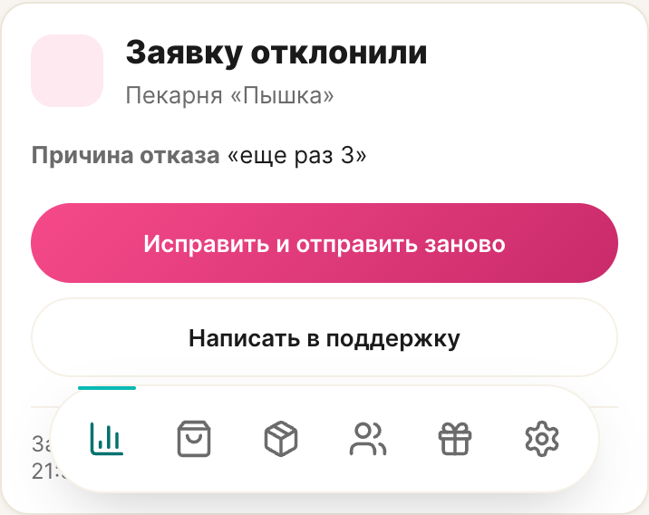
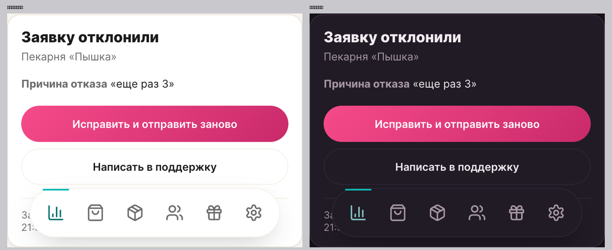

От «свалки данных» к состоянию: заголовок-статус, причина канонным блоком, действие рядом.
| Что | Было | Стало |
|---|---|---|
| Заголовок | «Заявка №34» — технический ID | «Не удалось подтвердить точку» — само состояние, крупно |
| Подзаголовок | «ИНН 7842216839 · Пекарня "Пышка"» — сырые данные | название точки; ИНН ушёл в метаданные |
| Статус | мелкий бейдж сбоку | состояние = заголовок, с иконкой отказа |
| Причина | абзац текста в общем потоке | канонный блок role-note, отдельной карточкой |
| Действие | «Отправить заявку заново» в хвосте | «Исправить и отправить заново» сразу под причиной |
| Метаданные | смешаны с смыслом | приглушённая строка внизу: «Заявка №34 · ИНН …» |
| Таймлайн | показывал «счастливый» путь | для отказа убран — терминальное состояние не путь |
| Высота блока | 546px | 208px |

| Строка | Было | Стало |
|---|---|---|
| Заголовок | Заявка №34 | Заявку отклонили |
| Статус (бейдж/строка) | Не удалось подтвердить точку | Заявку отклонили (одна формулировка на всех экранах) |
| Подпись | ИНН 7842216839 · Пекарня "Пышка" | Пекарня «Пышка» (ИНН — в метаданные) |
| Пояснение | — | Представитель не подтвердил подключение точки. Исправьте данные и отправьте заявку заново — или напишите в поддержку. |
| Причина | Причина отказа: еще раз 3 | Заголовок «Причина отказа» + цитата «еще раз 3» |
| Действие | Отправить заявку заново | Исправить и отправить заново (+ Написать в поддержку) |
| Метаданные | — | Заявка №34 · ИНН 7842216839 · подана 27.09.2026, 21:38 |
Формулировка статуса унифицирована в ядре и приложении: «Заявку отклонили» вместо «Не удалось подтвердить точку» — понятно, кто и что сделал.
Проверил весь кабинет МСП по фонам, радиусам, отступам, шрифтам и акцентам. Нашёл дефекты в собственном блоке:
| Проблема | Было | Стало |
|---|---|---|
Занял чужой класс msp-overview__state | блок наследовал стили состояния ошибки (вертикальная раскладка), ломая его | свой класс msp-overview__failed — состояние ошибки не тронуто |
| Плитка иконки | без размера и радиуса (класс ДС не объявлен) | role-icon-tile по ДС: радиус 12 — как у остальных плиток |
| Заголовок причины | обычный абзац 16/400 | role-note__title по ДС: 13.5/800 |
Итоговая раскладка системы на экране: карточки — радиус 16, плитки — 12, кнопки — pill, заголовки секций — 16/800. Акценты: кабинет — бирюза, отказ — семантический красный. Разъехавшихся элементов не осталось.
Раньше содержимое лежало на экране разными компонентами: статус — сам по себе, причина — отдельной карточкой, кнопки и метаданные — просто на фоне. Теперь всё внутри одной карточки состояния с общей рамкой, радиусом 16 и тенью системы.
| Внутри карточки | Оформление |
|---|---|
| Иконка отказа + заголовок «Заявку отклонили» + название точки | шапка карточки |
| «Причина отказа» + цитата | подложка семантического красного (радиус 12) |
| «Исправить и отправить заново» + «Написать в поддержку» | две кнопки pill в столбик |
| «Заявка №34 · ИНН … · подана …» | приглушённая строка, отделена хайрлайном |
Внешний вид: одна рамка, внутренние подложки группируют смысл, ничего не «висит» на фоне.
| Что | Было (самодеятельность) | Стало (канон) |
|---|---|---|
| Причина отказа | плашка с красным фоном, заголовок + цитата | простая строка: «Причина отказа «…»» — серая подпись + текст |
| Тон плитки отказа | красный (feedback-negative) | role-status[data-tone="failed"]: soft-pink фон / pink-dark иконка |
Вывод: палитра сдержанная — pale-pink плитка, розовая основная кнопка, нейтральная вторичная, бирюза навигации. Красный убран.
| Элемент | Светлая | Тёмная |
|---|---|---|
| Заголовок «Заявку отклонили» | 17.4 | 14.4 |
| Название точки | 5.3 | 6.2 |
| «Причина отказа» (подпись) | 5.3 | 6.2 |
| Текст причины | 17.4 | 14.4 |
| Метаданные | 5.3 | 6.2 |
Норма AA — от 4.5; всё проходит в обеих темах. Иконку отказа убрал: у канонного тона role-status[data-tone="failed"] (soft-pink / pink-dark) контраст иконки в тёмной теме низкий — плитка сливалась, а выдумывать свой тон нельзя. Заголовок и так называет состояние.
